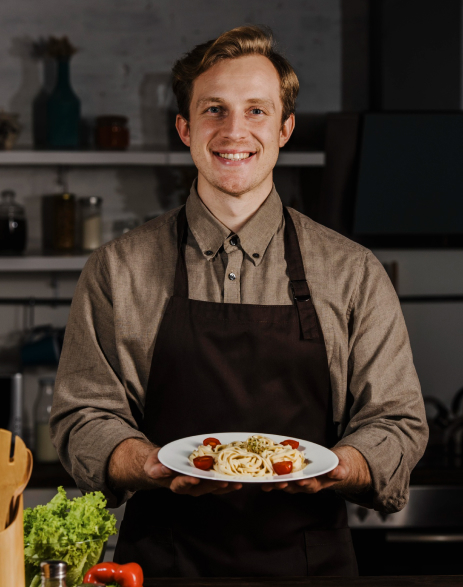

<link rel="stylesheet" href="style.css">

<section id="geschtalt-ourbelieves" data-name="geschtalt-ourbelieves" data-tag="section">
  <div class="container">

    <div class="ourbelieves-content wrapper">
      <div class="chef wrapper">
        <div class="box wrapper">
        </div>
        
      </div>
      <div class="text wrapper content-box">

        <div class="chef-information wrapper content-box">
          <h4 class="tag">كلمة الشيف</h4>
          <h2 class="title">ما نؤمن به</h2>
          <p class="desc">
            نحن نؤمن بأن الطعام يجب أن يكون تجربة تتجاوز مجرد التغذية، بل يجب أن يكون لحظة من السعادة والجمال. في
            مطعمنا،
            نستخدم أفضل المكونات الطازجة لتقديم أطباق تضفي البهجة على الحواس وتبعث الراحة في النفس. نهدف دائمًا إلى
            تقديم
            تجربة طعام استثنائية لكل ضيف يزورنا
          </p>
          <div class="info wrapper content-box">
            <p class="info-name">كيفن لو</p>
            <p class="info-title">الشيف والمؤسس</p>
          </div>
        </div>

        
      </div>
    </div>

  </div>
</section>

<script src="index.js"></script>